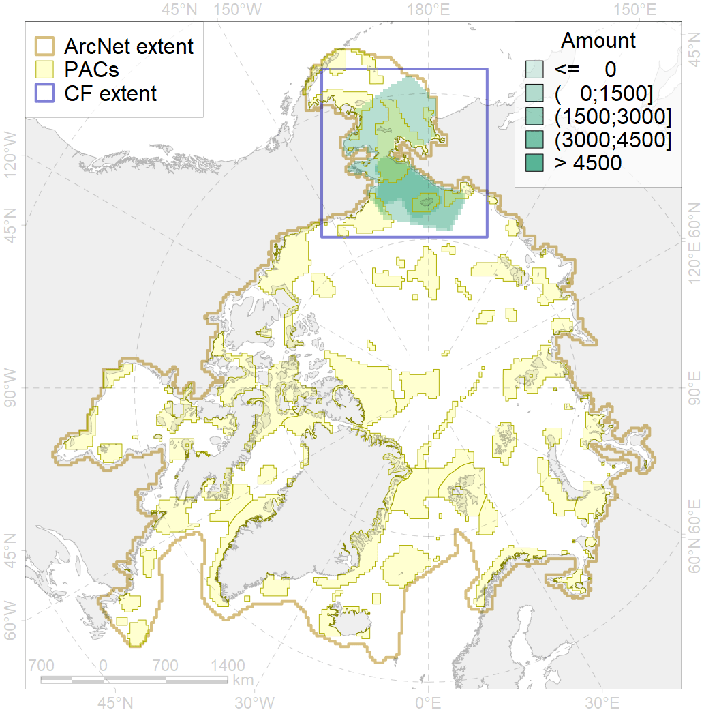
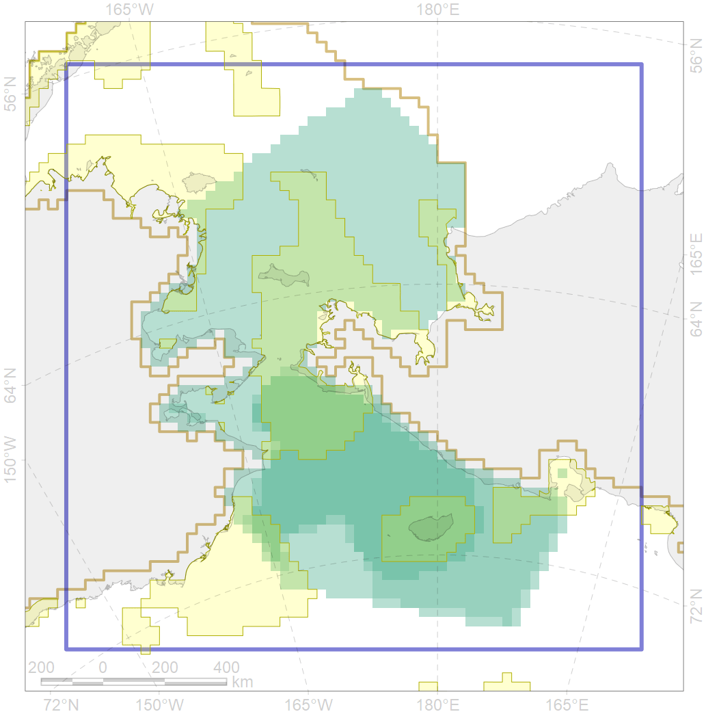

9004

| CF ID | 9004 |
| CF Name | polar bear of the CS (Chukchi Sea) subpopulation distribution |
| Time Period | 1958-2017 |
| Source(s) | Belikov, 2011; Smith et al., 2017; Polar bear critical habitat USFWS, 2010; Platonov, 2018 |
| Seasonality | January - December |
| Depth Horizon | 0 |
| Methodology | Field data, expert opinion, simulation results. |
| Author Name | Evgeniya Melikhova, Stanislav Belikov |
| Notes | |
| Conservation Target Set in the Scenario | 0.324 |
| Conservation Target Achieved in the Scenario | 0.376 (Scenario: 116.0%) |
| PAC ID | Proportion in the PAC | Contribution to ArcNet Target Achievement | PAC’s Contribution to the Achieved Target |
|---|---|---|---|
| 3 | 0.9% | 2.0% | 1.7% |
| 4 | 0.1% | 0.2% | 0.2% |
| 5 | 20.5% | 58.5% | 50.4% |
| 6 | 0.1% | 0.3% | 0.3% |
| 7 | 11.6% | 35.2% | 30.4% |
| 8 | 3.1% | 6.8% | 5.8% |
| 60 | 2.7% | 6.8% | 5.9% |
| inner | 39.1% | 109.8% | 94.7% |
| outer | 60.9% | 6.1% | 5.3% |